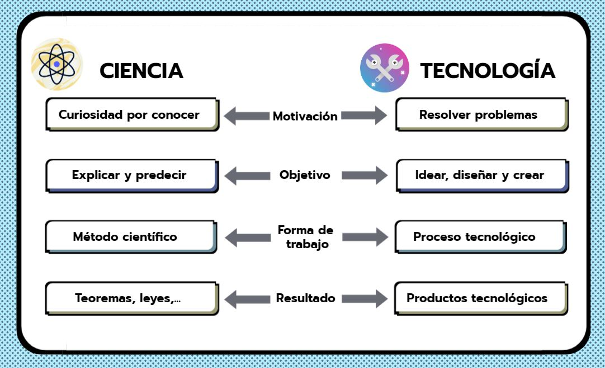

La palabra "tecnología" es de origen griego, formada por las palabras "tecne" (arte, técnicas u oficio) y "logos" (conjunto de saberes o tratado). Data del s. XVIII, cuando se comenzó a aplicar un enfoque científico a determinados problemas sociales o necesidades humanas. Como consecuencia, las ciencias y técnicas se relacionaron estrechamente entre sí.
Por tanto, para poder entender mejor las diferentes definiciones de tecnología, debemos definir previamente los conceptos de ciencia y técnica:
- CIENCIA. Es el conjunto de conocimientos que tiene el ser humano del mundo, de la naturaleza... Ejemplos: la Biología, la Física, la Medicina, la Genética...
- TÉCNICA. Se refiere a las habilidades o destrezas, es decir, todo aquello que sabemos hacer. Ejemplos: construir un puente, arar un campo, unir dos piezas de madera, soldar dos piezas metálicas...
La Real Academia de la Lengua define tecnología como: "conjunto de teorías y de técnicas que permiten el aprovechamiento práctico del conocimiento científico".
Sin embargo, una definición más completa podría ser: "conjunto de conocimientos y destrezas que se emplean para idear, diseñar y construir productos que intentan satisfacer las necesidades surgidas en una sociedad determinada".
Vemos que entre la ciencia y la tecnología hay una estrecha relación... en el siguiente esquema podemos ver las características de ambas:

Por otro lado, hay que decir que la tecnología no es buena ni mala. Los productos tecnológicos lo serán en función del uso que se les da. Por ejemplo podemos usar un ordenador para cálculos imposibles para las personas, controlar procesos, guardar información....o para el tráfico de datos personales, piratería informática, ciberacoso, robo de identidad...